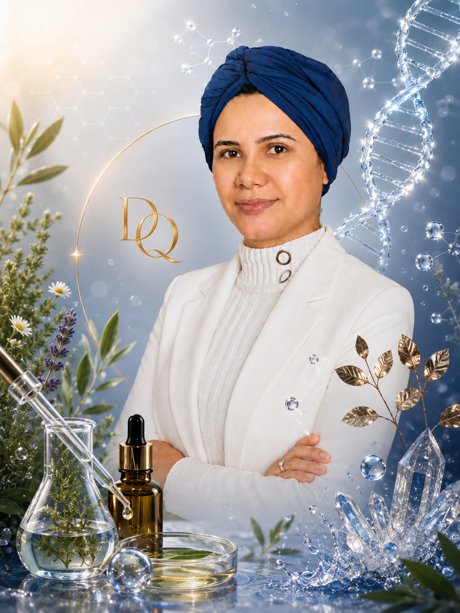
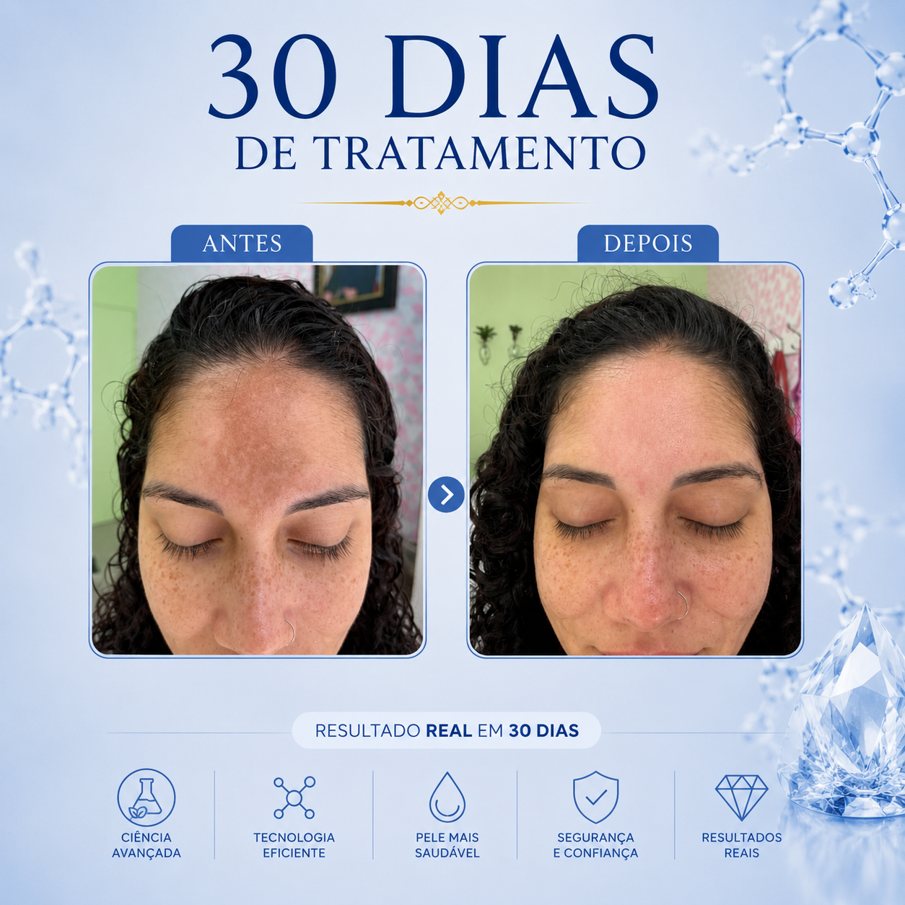
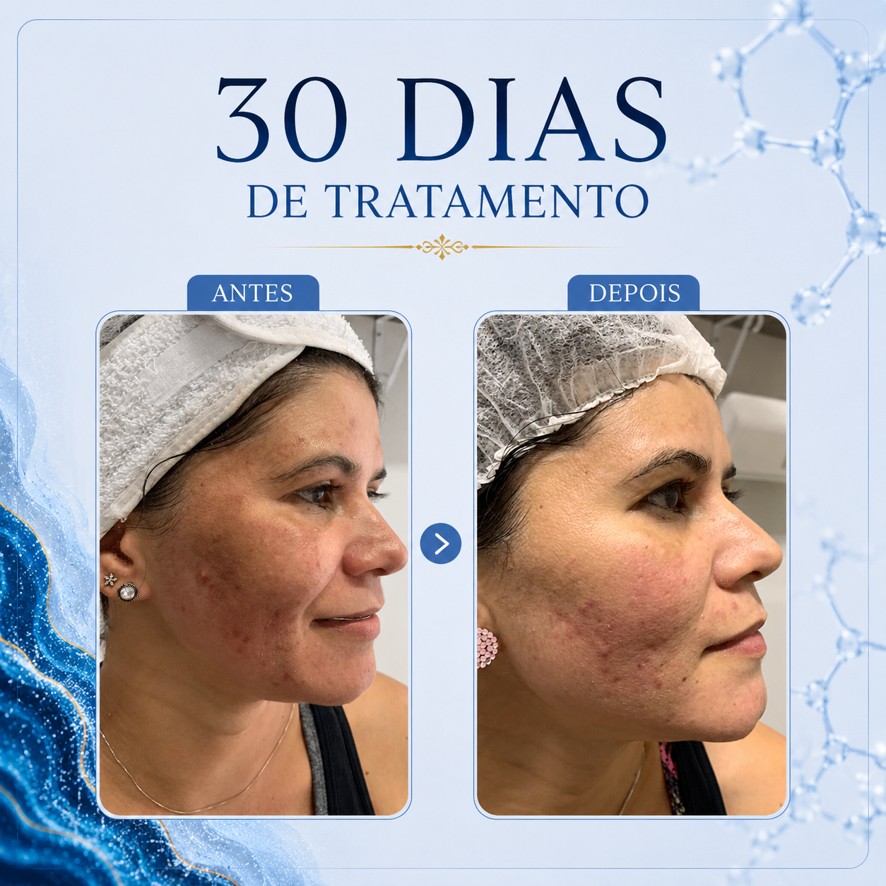

Atendimento especializado para melasma em Copacabana, Ipanema, Leblon, Botafogo, Flamengo, Leme, Lagoa e toda a Zona Sul do Rio de Janeiro.
Tratamento personalizado para melasma facial, manchas hormonais, manchas solares e hiperpigmentação com avaliação individualizada e acompanhamento especializado.
Agendar Avaliação
O melasma é uma condição de pele caracterizada pelo aparecimento de manchas escuras, principalmente na face. Sua origem pode estar relacionada a fatores hormonais, predisposição genética, exposição solar e processos inflamatórios.
Cada paciente apresenta características próprias. Por isso, a avaliação individualizada é fundamental para compreender os fatores que contribuem para o surgimento e a manutenção das manchas.
Durante a consulta são analisados o histórico clínico, rotina de cuidados com a pele, exposição ao sol, hábitos de vida e demais aspectos que possam influenciar diretamente a pigmentação cutânea.
O objetivo é desenvolver uma estratégia personalizada que permita melhorar gradualmente a uniformidade da pele e reduzir os estímulos responsáveis pela recorrência do melasma.
O tratamento de melasma em Copacabana é desenvolvido de forma individualizada, considerando as características específicas de cada paciente, a profundidade das manchas e os fatores que contribuem para o surgimento ou agravamento da pigmentação.
O melasma é uma condição multifatorial que pode estar associado à predisposição genética, alterações hormonais, exposição solar, calor excessivo, processos inflamatórios e hábitos de vida. Por isso, uma avaliação completa é essencial para compreender a origem e o comportamento das manchas.
Durante a consulta são analisados o histórico clínico, rotina de cuidados com a pele, exposição ao sol, uso de medicamentos, fatores hormonais e demais elementos que possam influenciar diretamente o quadro de melasma.
Essas informações permitem construir um plano de tratamento personalizado, direcionado para as necessidades específicas de cada paciente e alinhado aos objetivos definidos durante a avaliação.
Além dos procedimentos realizados em consultório, a rotina domiciliar tem papel fundamental no controle do melasma. A utilização adequada dos produtos recomendados e a proteção solar diária são etapas importantes para a manutenção dos resultados.
O acompanhamento periódico possibilita monitorar a evolução da pele, realizar ajustes sempre que necessário e orientar o paciente sobre estratégias de prevenção da recorrência das manchas.
O objetivo do tratamento não é apenas reduzir a intensidade das manchas já existentes, mas também minimizar os estímulos que favorecem a produção excessiva de melanina e contribuem para o reaparecimento do melasma.
Pacientes de Copacabana, Ipanema, Leblon, Botafogo, Flamengo, Leme, Lagoa, Humaitá e demais bairros da Zona Sul do Rio de Janeiro procuram cada vez mais tratamentos especializados para melasma devido ao impacto que as manchas podem causar na autoestima e na percepção da própria imagem.
A intensa exposição solar característica da orla carioca torna a proteção diária um fator ainda mais relevante para quem busca controlar o melasma e preservar a uniformidade da pele ao longo do tempo.
A avaliação individualizada permite compreender as particularidades de cada caso e definir uma estratégia adequada para melhorar a aparência da pele, reduzir a intensidade das manchas e promover resultados progressivos e sustentáveis.
O melasma é uma das alterações pigmentares mais comuns observadas na prática clínica. Caracteriza-se pelo aparecimento de manchas escuras principalmente na testa, maçãs do rosto, nariz e região acima dos lábios.
Em bairros como Copacabana, Ipanema e Leblon, onde a exposição solar faz parte da rotina de muitas pessoas, o controle do melasma exige atenção especial aos hábitos diários e aos fatores ambientais que podem estimular a pigmentação.
Além da radiação ultravioleta, o calor, a luz visível, alterações hormonais e fatores genéticos também podem contribuir para a persistência das manchas. Por esse motivo, o tratamento deve ser conduzido de forma estratégica e personalizada.
Cada paciente apresenta necessidades diferentes. Alguns casos possuem maior influência hormonal, enquanto outros apresentam relação mais significativa com exposição solar acumulada ou processos inflamatórios da pele.
A identificação desses fatores permite estabelecer uma abordagem mais direcionada, aumentando as chances de controle do melasma e favorecendo uma aparência mais uniforme da pele.
Pacientes de toda a Zona Sul do Rio de Janeiro frequentemente buscam tratamento especializado para melasma, manchas faciais e hiperpigmentações, procurando estratégias que auxiliem tanto na melhora estética quanto na prevenção da recorrência das manchas.
Alterações hormonais podem estimular a produção excessiva de melanina e favorecer o surgimento das manchas faciais.
Saiba Mais →A exposição solar intensa pode agravar o melasma, especialmente em regiões de praia como Copacabana e toda a Zona Sul.
Saiba Mais →Diferentes tipos de hiperpigmentação podem comprometer a uniformidade da pele e impactar a autoestima.
Saiba Mais →O escurecimento excessivo da pele pode estar relacionado a fatores hormonais, inflamatórios e ambientais.
Saiba Mais →Cada paciente apresenta características únicas e os resultados variam conforme a profundidade das manchas, histórico clínico, adesão ao tratamento e resposta individual da pele.

Melhora gradual da uniformidade da pele e redução progressiva da intensidade das manchas faciais.

Evolução clínica obtida através de protocolo personalizado e acompanhamento periódico.
O melasma é uma condição que afeta milhares de pessoas no Rio de Janeiro, especialmente em regiões litorâneas como Copacabana, Ipanema e Leblon, onde a exposição solar faz parte da rotina diária.
Caracterizado pelo aparecimento de manchas escuras principalmente na face, o melasma pode gerar desconforto estético e impactar diretamente a autoestima, levando muitas pessoas a buscar acompanhamento especializado.
Além da predisposição genética e das alterações hormonais, fatores como radiação ultravioleta, calor excessivo e luz visível podem estimular a produção de melanina e contribuir para a manutenção das manchas.
Em uma cidade como o Rio de Janeiro, onde a incidência solar é elevada durante praticamente todo o ano, a proteção adequada torna-se uma das estratégias mais importantes para quem deseja controlar o melasma.
Pacientes de Copacabana, Ipanema, Leblon, Botafogo, Flamengo, Lagoa, Humaitá, Jardim Botânico e demais bairros da Zona Sul frequentemente procuram tratamentos especializados para reduzir a intensidade das manchas e melhorar a aparência da pele.
A avaliação individualizada permite identificar os fatores predominantes em cada caso e desenvolver uma estratégia personalizada para promover resultados progressivos e mais duradouros.
O acompanhamento periódico também é importante para monitorar a evolução da pele, orientar ajustes necessários e reforçar medidas preventivas que ajudam a reduzir o risco de recorrência do melasma.
Quanto mais cedo o melasma for tratado, maiores são as chances de controlar a evolução das manchas e preservar a uniformidade da pele. Agende sua avaliação e descubra qual estratégia é mais indicada para o seu caso.
Agendar Consulta pelo WhatsAppAlém do atendimento para tratamento de melasma em Copacabana, também realizamos atendimentos em outras regiões do Rio de Janeiro.
O melasma é uma condição crônica. Embora não exista uma cura definitiva, é possível controlar as manchas e melhorar significativamente a aparência da pele através de acompanhamento adequado.
O tempo varia conforme a profundidade das manchas, histórico do paciente, adesão ao tratamento e fatores individuais.
Sim. O melasma apresenta tendência à recorrência. Por isso, os cuidados de manutenção e proteção solar são fundamentais.
A proteção solar diária é uma das etapas mais importantes para o controle do melasma, ajudando a reduzir os estímulos que favorecem o escurecimento das manchas.
Além do tratamento de melasma em Copacabana, também realizamos atendimento para acne, rosácea, rejuvenescimento facial, manchas faciais, alopecia, dermatite seborreica e consultoria personalizada de skincare.
Conheça Todos os Tratamentos →